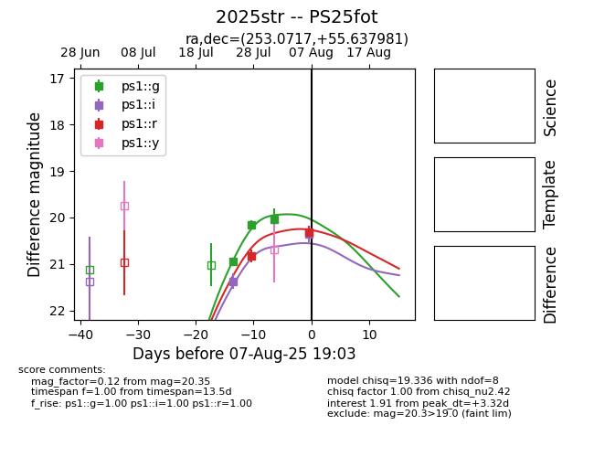

Target 2025str at 2025-08-07 19:17, see:
TNS: wis-tns.org/object/2025str
YSE: ziggy.ucolick.org/yse/transient_detail/2025str
alt names
2025str (yse,tns)
PS25fot (panstarrs)
coordinates:
equatorial (ra, dec) = (253.0717,+55.63798)
galactic (l, b) = (84.0203,+38.75267)
photometry
last ps1::g=20.05, ps1::i=20.35, ps1::r=20.31
3 ps1::g, 2 ps1::i, 2 ps1::r detections
